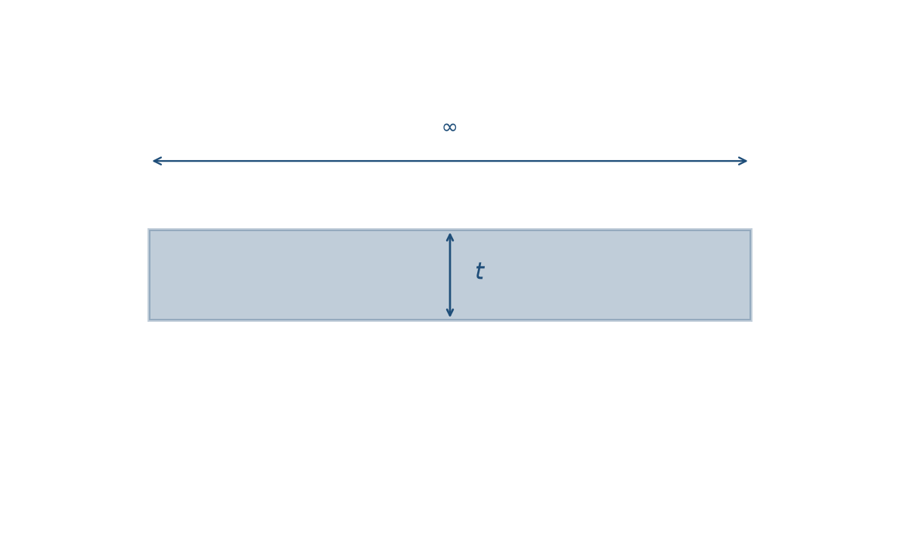
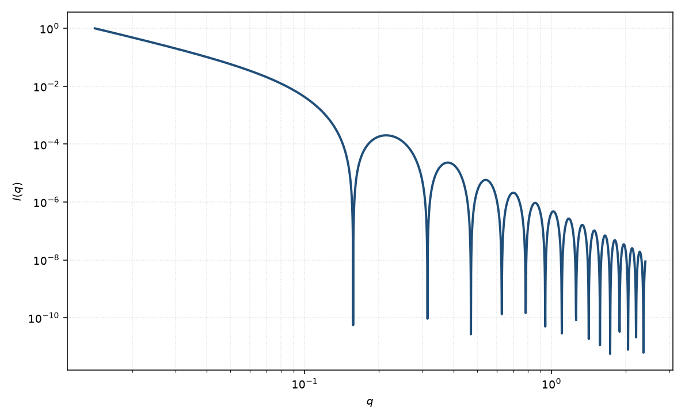

层状
lamellar
适用场景
当散射体可视为横向远大于仪器窗口、沿法向只有一层（或彼此无关联的多层）均匀板时，无限片层形式因子是最直接的描述。典型对象包括：稀释的溶致层状相单层、剥离后的黏土或氧化石墨烯片、以及横向尺寸已超出 $q_{\min}$ 所能分辨的脂质双层粗描述。
曲线判据：中间区接近 $I\sim q^{-2}$，并在 $q\sim 2\pi/t$ 出现厚度决定的振荡或拐点。若在 $q\simeq 2\pi/d$ 出现布拉格峰，说明层间有关联，应改用 Caille 或准晶堆叠，而不是给单层强加周期。横向有限（盘、tactoid）应改用堆叠圆盘或扁圆柱。
稀溶液、片层互不相关时只拟合 $P(q)$（含粉末 Lorentz 因子）。体积分数升高并出现层状峰时，把峰误读成厚度变化是常见错误。
物理图像
无限大平板的粉末平均把取向积分收成 $2\pi/q^2$：只有法向几乎平行 $\mathbf{q}$ 的片层才贡献。厚度方向若取矩形散射长度密度剖面，振幅正比 $\mathrm{sinc}(qt/2)$，强度再乘该因子的平方。Nallet 把这一厚度形式因子与层间结构因子分开：孤立片相当于 $S(q)=1$。
低 $q$ 的 $q^{-2}$ 来自二维扩展，不是 Porod $q^{-4}$。厚度振荡的第一零点约在 $qt=2\pi$。绝对强度还含面积浓度与衬度平方；拟合中常收进标度因子。
示意图


核心公式
出发点
稀释、取向无规的均匀无限平板。相干振幅是衬度对平面波相位的体积分
$$F(\mathbf{q})=\int_V \Delta\rho(\mathbf{r})\,\mathrm{e}^{i\mathbf{q}\cdot\mathbf{r}}\,\mathrm{d}^3r.$$取板心为原点、法向为 $z$，板内 $\Delta\rho$ 为常数、厚度为 $t$、横向面积为 $A$：
$$F(\mathbf{q})=\Delta\rho\int_A\mathrm{e}^{i\mathbf{q}_\perp\cdot\mathbf{r}_\perp}\,\mathrm{d}^2r_\perp\int_{-t/2}^{t/2}\mathrm{e}^{i q_z z}\,\mathrm{d}z.$$厚度积分与 $q_z$ 的一维矩形傅里叶变换相同。令 $\mathrm{sinc}\,x=\sin x/x$，
$$\int_{-t/2}^{t/2}\mathrm{e}^{i q_z z}\,\mathrm{d}z=t\,\mathrm{sinc}\!\left(\frac{q_z t}{2}\right).$$推导
$A\to\infty$ 时面内积分趋向 $\delta^2(\mathbf{q}_\perp)$：只有法向几乎平行 $\mathbf{q}$ 的片层才散射。对有限大圆盘（半径 $R$，$A=\pi R^2$），面内因子是 $2J_1(q_\perp R)/(q_\perp R)$。取向平均用 $\alpha=\angle(\mathbf{q},\hat{\mathbf{n}})$，$q_\perp=q\sin\alpha$。当 $qR\gg 1$，Bessel 包络尖锐地集中在 $\alpha\approx 0,\pi$。对该峰积分给出
$$\Bigl\langle\Bigl[\frac{2J_1(qR\sin\alpha)}{qR\sin\alpha}\Bigr]^2\Bigr\rangle=\frac{2}{q^2 R^2}=\frac{2\pi}{q^2 A}.$$这就是无限片的粉末 Lorentz 因子 $2\pi/q^2$。取向片的厚度振幅在贡献取向处取 $q_z=q$，故
$$\bigl\langle|F|^2\bigr\rangle=(\Delta\rho)^2(At)^2\cdot\frac{2\pi}{q^2 A}\cdot P_{\mathrm{t}}(q)=\frac{2\pi A t^2}{q^2}(\Delta\rho)^2 P_{\mathrm{t}}(q),$$ $$P_{\mathrm{t}}(q)=\left[\mathrm{sinc}\!\left(\frac{qt}{2}\right)\right]^2.$$数密度 $n$，体积分数 $\phi=nAt$，观测强度 $I(q)=n\langle|F|^2\rangle+B$：
$$I(q)=\frac{2\pi\phi t}{q^2}(\Delta\rho)^2 P_{\mathrm{t}}(q)+B.$$拟合里常把 $\phi(\Delta\rho)^2$ 收成 $\mathrm{scale}$。已取向的二维数据应回到 $I(q,\alpha)\propto|F(q\cos\alpha)|^2$，不要先做粉末平均。
低 $q$ 与渐近
Taylor：$\mathrm{sinc}\,x=1-x^2/6+O(x^4)$，$x=qt/2$，于是 $P_{\mathrm{t}}=1-(qt)^2/12+O(q^4)$。与一维 Guinier $P=1-q^2 R_g^2/3+\cdots$ 比较，薄板法向 $R_g^2=t^2/12$。Lorentz $2\pi/q^2$ 在 $q\to 0$ 仍在：无限片没有整体 Guinier 坪，中间区 $I\sim q^{-2}$。
$\mathrm{sinc}(qt/2)=0$ 的第一正根 $qt/2=\pi$，故第一零点 $q_1=2\pi/t$。大 $q$ 时 $\mathrm{sinc}\sim 2\sin(qt/2)/(qt)$，$P_{\mathrm{t}}\sim q^{-2}$，再乘 Lorentz 得振荡包络 $\sim q^{-4}$，即尖锐界面的 Porod 定律。
参数表
| 参数 | 符号 | 含义 | 单位 | 典型范围 |
|---|---|---|---|---|
| 厚度 | $t$ | 均匀片层的法向厚度 | Å | 10–80 Å（双层量级） |
| 体积分数 | $\phi$ | 片层所占体积分数 | 无量纲 | $10^{-4}$–$0.3$ |
| 衬度 | $\Delta\rho$ | 片层与溶剂的 SLD 差 | Å$^{-2}$ | 由组成或对比实验 |
| 极角 / 方位角 | $\theta,\phi$ | 片层法向（二维） | 度 | 剪切或磁场可取向 |
| 标度 / 本底 | $\mathrm{scale}$, $B$ | 前置因子与常数本底 | 与强度单位一致 | 实验相关 |
拟合注意
取向：一维数据默认粉末平均，法向角 $\theta,\phi$ 不可单独分辨。二维弧向收窄才说明片层取向；把粉末 $q^{-2}$ 误读成已取向，会低估畴的各向异性。
多分散：厚度分布抹平 $\mathrm{sinc}$ 零点并改变振荡相位。横向尺寸若并非无限，低 $q$ 会偏离 $q^{-2}$ 并出现整体 Guinier，应离开本模型。
磁性：核磁 SLD 与核（核散射）SLD 是不同通道。若只有部分厚度带磁矩，磁形式因子仍是 $\mathrm{sinc}$，但磁厚度不必等于核厚度。仪器 smearing 会填浅零点，与厚度多分散同向，须用分辨率函数区分。
可辨识性：仅有中间区斜率时，$t$ 与标度、本底强相关。要约束 $t$，需要看到厚度振荡或独立的组成/面积信息。出现层状峰时不要用本模型硬撑；畴大小与 Caille $\eta$ 属于堆叠页。
相近模型
- 头基–尾链层状 — 头基与尾链两段衬度，高 $q$ 节点移动。
- Caille 层状堆叠 — 层间热起伏，出现布拉格峰。
- 堆叠圆盘 — 横向有限半径，而不是无限片。
- 囊泡 — 弯曲闭合双层，低 $q$ 有整体尺寸 Guinier。
参考文献
- Guinier, A.; Fournet, G. Small-Angle Scattering of X-rays. Wiley: New York, 1955.
- Nallet, F.; Laversanne, R.; Roux, D. Modelling X-ray or neutron scattering spectra of lyotropic lamellar phases: interplay between form and structure factors. J. Phys. II France 1993, 3, 487–502. DOI: 10.1051/jp2:1993146